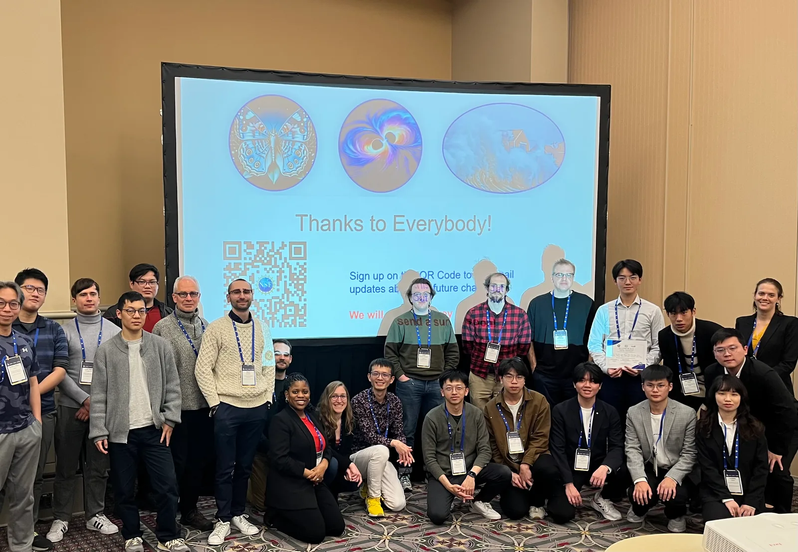
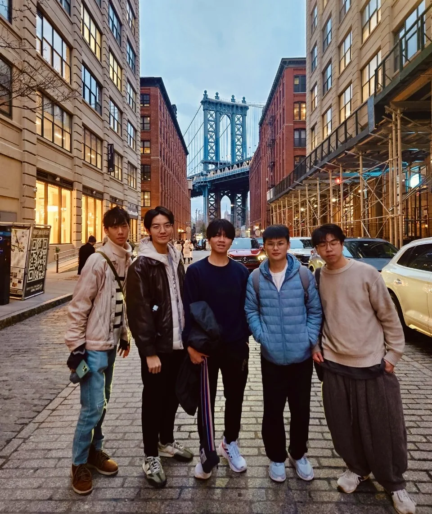
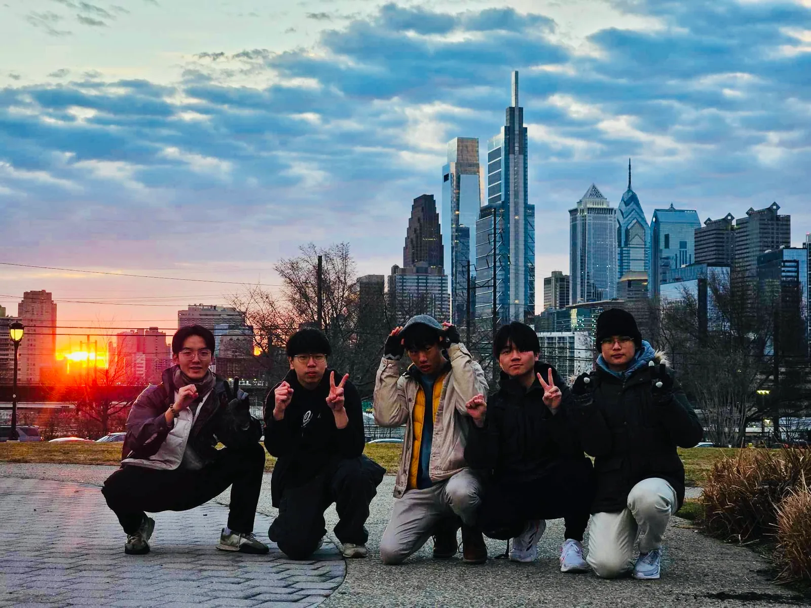

When we entered the NSF HDR ML Challenge, only 20 days remained before submission. I brought together five teammates as 20iterations, splitting our work across gravitational-wave, hybrid-butterfly, and sea-level anomaly tasks. Organisers reported more than 600 participating teams across the three datasets; among teams completing all three, we placed second overall and were invited to present at the AAAI-25 Workshop in Philadelphia.


Those 20 days were not about finding one magic model. We built baselines, audited data splits, traced failures, and turned each result into the next experiment. As team lead, I coordinated decisions across the three task groups and made sure our results could be reproduced and explained.

Two days at AAAI exposed me to research ranging from AI agents to quantum machine learning, and made my interest in NeuroAI more concrete. The lasting result was not only a ranking; it was the experience of putting methods, teamwork, and scientific judgement under the same deadline.


Ten days across Philadelphia and New York—from early-morning streets and UPenn to the view from Top of the Rock—gave us distance from the sprint. What matters most is still the five teammates beside me. We did not invent a universal algorithm; we made every verifiable choice we could in 20 days, and reached Philadelphia together.
報名 NSF HDR ML Challenge 時，距離提交只剩 20 天。我找來五位隊友組成 20iterations，分頭處理重力波、蝴蝶雜交種與海平面異常偵測。主辦方指出，三項資料集合計有 600 支以上參賽隊伍；我們在完成全部三題的總排名中位居第二，並受邀前往費城的 AAAI-25 Workshop。
這 20 天的核心不是一次命中的模型，而是反覆拆解任務與評估規則：建立 baseline、檢查資料切分、追蹤錯誤，再把每次失敗變成下一輪實驗。身為六人團隊的隊長，我負責整合三個子題的進度與決策，確保每個結果都能被重現與說明。
在 AAAI 的兩天裡，我第一次近距離接觸從 AI agents 到 quantum machine learning 的研究，也開始更具體地思考自己想投入的 NeuroAI 問題。比賽帶來的不是單一名次，而是一個能把方法、團隊與研究判斷放在同一張桌上的經驗。
費城與紐約的十天，從清晨街頭、UPenn 到 Top of the Rock，讓這段高壓合作終於有了可以回望的距離。最重要的仍是五位隊友：我們沒有發明一個萬能演算法，但我們把二十天內每一個可驗證的選擇做到最好，並一起走到了費城。